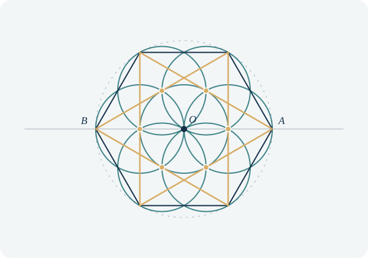

Derbarê
Malperek ji bo nivîsên zanistî yên bi kurdî
Nivîskar
Muhammed Ökmen
Beşa Fizîkê û Beşa Matematîkê, Zanîngeha Boğaziçi, Stenbol.
Li vir gotarên min ên bi kurmancî li ser fizîk û matematîkê tên parvekirin.

Derbarê
Nivîskar
Beşa Fizîkê û Beşa Matematîkê, Zanîngeha Boğaziçi, Stenbol.
Li vir gotarên min ên bi kurmancî li ser fizîk û matematîkê tên parvekirin.
